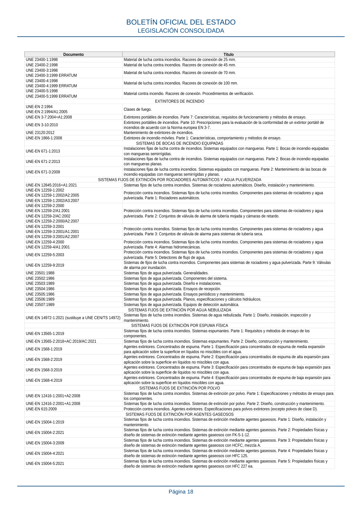

RSCIEI · edición 2025-04-10 · capa asociada
Documento RSCIEI-asociada · SHA-256 del PDF 85aa0af25d51e5b58d8975a4eefbf76d3f57a8933445cfe814ae9c4818a2e3e7
Página física 18 de 108.
Copia fiel del PDF fuente · Fuente oficial
Ficha de la disposición en la fuente oficial
Texto extraído y reorganizado: Basado en datos de la Agencia Estatal Boletín Oficial del Estado. PDF reproducido: Fuente de los datos: Agencia Estatal Boletín Oficial del Estado.
Formato: Texto de la página (Markdown)
Documento Título UNE 23400-1:1998 Material de lucha contra incendios. Racores de conexión de 25 mm. UNE 23400-2:1998 Material de lucha contra incendios. Racores de conexión de 45 mm. UNE 23400-3:1998 UNE 23400-3:1999 ERRATUM Material de lucha contra incendios. Racores de conexión de 70 mm. UNE 23400-4:1998 UNE 23400-4:1999 ERRATUM Material de lucha contra incendios. Racores de conexión de 100 mm. UNE 23400-5:1998 UNE 23400-5:1999 ERRATUM Material contra incendio. Racores de conexión. Procedimientos de verificación. EXTINTORES DE INCENDIO UNE-EN 2:1994 UNE-EN 2:1994/A1:2005 Clases de fuego. UNE-EN 3-7:2004+A1:2008 Extintores portátiles de incendios. Parte 7: Características, requisitos de funcionamiento y métodos de ensayo. UNE-EN 3-10:2010 Extintores portátiles de incendios. Parte 10: Prescripciones para la evaluación de la conformidad de un extintor portátil de incendios de acuerdo con la Norma europea EN 3-7. UNE 23120:2012 Mantenimiento de extintores de incendios. UNE-EN 1866-1:2008 Extintores de incendio móviles. Parte 1: Características, comportamiento y métodos de ensayo. SISTEMAS DE BOCAS DE INCENDIO EQUIPADAS UNE-EN 671-1:2013 Instalaciones fijas de lucha contra de incendios. Sistemas equipados con mangueras. Parte 1: Bocas de incendio equipadas con mangueras semirrígidas. UNE-EN 671-2:2013 Instalaciones fijas de lucha contra de incendios. Sistemas equipados con mangueras. Parte 2: Bocas de incendio equipadas con mangueras planas. UNE-EN 671-3:2009 Instalaciones fijas de lucha contra incendios. Sistemas equipados con mangueras. Parte 2: Mantenimiento de las bocas de incendio equipadas con mangueras semirrígidas y planas. SISTEMAS FIJOS DE EXTINCIÓN POR ROCIADORES AUTOMÁTICOS Y AGUA PULVERIZADA UNE-EN 12845:2016+A1:2021 Sistemas fijos de lucha contra incendios. Sistemas de rociadores automáticos. Diseño, instalación y mantenimiento. UNE-EN 12259-1:2002 UNE-EN 12259-1:2002/A2:2005 UNE-EN 12259-1:2002/A3:2007 Protección contra incendios. Sistemas fijos de lucha contra incendios. Componentes para sistemas de rociadores y agua pulverizada. Parte 1: Rociadores automáticos. UNE-EN 12259-2:2000 UNE-EN 12259-2/A1:2001 UNE-EN 12259-2/AC:2002 UNE-EN 12259-2:2000/A2:2007 Protección contra incendios. Sistemas fijos de lucha contra incendios. Componentes para sistemas de rociadores y agua pulverizada. Parte 2: Conjuntos de válvula de alarma de tubería mojada y cámaras de retardo. UNE-EN 12259-3:2001 UNE-EN 12259-3:2001/A1:2001 UNE-EN 12259-3:2001/A2:2007 Protección contra incendios. Sistemas fijos de lucha contra incendios. Componentes para sistemas de rociadores y agua pulverizada. Parte 3: Conjuntos de válvula de alarma para sistemas de tubería seca. UNE-EN 12259-4:2000 UNE-EN 12259-4/A1:2001 Protección contra incendios. Sistemas fijos de lucha contra incendios. Componentes para sistemas de rociadores y agua pulverizada. Parte 4: Alarmas hidromecánicas. UNE-EN 12259-5:2003 Protección contra incendios. Sistemas fijos de lucha contra incendios. Componentes para sistemas de rociadores y agua pulverizada. Parte 5: Detectores de flujo de agua. UNE-EN 12259-9:2019 Sistemas de fijos de lucha contra incendios. Componentes para sistemas de rociadores y agua pulverizada. Parte 9: Válvulas de alarma por inundación. UNE 23501:1988 Sistemas fijos de agua pulverizada. Generalidades. UNE 23502:1986 Sistemas fijos de agua pulverizada. Componentes del sistema. UNE 23503:1989 Sistemas fijos de agua pulverizada. Diseño e instalaciones. UNE 23504:1986 Sistemas fijos de agua pulverizada. Ensayos de recepción. UNE 23505:1986 Sistemas fijos de agua pulverizada. Ensayos periódicos y mantenimiento. UNE 23506:1989 Sistemas fijos de agua pulverizada. Planos, especificaciones y cálculos hidráulicos. UNE 23507:1989 Sistemas fijos de agua pulverizada. Equipos de detección automática. SISTEMAS FIJOS DE EXTINCIÓN POR AGUA NEBULIZADA UNE-EN 14972-1:2021 (sustituye a UNE CEN/TS 14972) Sistemas fijos de lucha contra incendios. Sistemas de agua nebulizada. Parte 1: Diseño, instalación, inspección y mantenimiento. SISTEMAS FIJOS DE EXTINCIÓN POR ESPUMA FÍSICA UNE-EN 13565-1:2019 Sistemas fijos de lucha contra incendios. Sistemas espumantes. Parte 1: Requisitos y métodos de ensayo de los componentes. UNE-EN 13565-2:2018+AC:2019/AC:2021 Sistemas fijos de lucha contra incendios. Sistemas espumantes. Parte 2: Diseño, construcción y mantenimiento. UNE-EN 1568-1:2019 Agentes extintores. Concentrados de espuma. Parte 1: Especificación para concentrados de espuma de media expansión para aplicación sobre la superficie en líquidos no miscibles con el agua. UNE-EN 1568-2:2019 Agentes extintores. Concentrados de espuma. Parte 2: Especificación para concentrados de espuma de alta expansión para aplicación sobre la superficie en líquidos no miscibles con agua. UNE-EN 1568-3:2019 Agentes extintores. Concentrados de espuma. Parte 3: Especificación para concentrados de espuma de baja expansión para aplicación sobre la superficie de líquidos no miscibles con agua. UNE-EN 1568-4:2019 Agentes extintores. Concentrados de espuma. Parte 4: Especificación para concentrados de espuma de baja expansión para aplicación sobre la superficie en líquidos miscibles con agua. SISTEMAS FIJOS DE EXTINCIÓN POR POLVO UNE-EN 12416-1:2001+A2:2008 Sistemas fijos de lucha contra incendios. Sistemas de extinción por polvo. Parte 1: Especificaciones y métodos de ensayo para los componentes. UNE-EN 12416-2:2001+A1:2008 Sistemas fijos de lucha contra incendios. Sistemas de extinción por polvo. Parte 2: Diseño, construcción y mantenimiento. UNE-EN 615:2009 Protección contra incendios. Agentes extintores. Especificaciones para polvos extintores (excepto polvos de clase D). SISTEMAS FIJOS DE EXTINCIÓN POR AGENTES GASEOSOS UNE-EN 15004-1:2019 Sistemas fijos de lucha contra incendios. Sistemas de extinción mediante agentes gaseosos. Parte 1: Diseño, instalación y mantenimiento. UNE-EN 15004-2:2021 Sistemas fijos de lucha contra incendios. Sistemas de extinción mediante agentes gaseosos. Parte 2: Propiedades físicas y diseño de sistemas de extinción mediante agentes gaseosos con FK-5-1-12. UNE-EN 15004-3:2009 Sistemas fijos de lucha contra incendios. Sistemas de extinción mediante agentes gaseosos. Parte 3: Propiedades físicas y diseño de sistemas de extinción mediante agentes gaseosos con HCFC, mezcla A. UNE-EN 15004-4:2021 Sistemas fijos de lucha contra incendios. Sistemas de extinción mediante agentes gaseosos. Parte 4: Propiedades físicas y diseño de sistemas de extinción mediante agentes gaseosos con HFC 125. UNE-EN 15004-5:2021 Sistemas fijos de lucha contra incendios. Sistemas de extinción mediante agentes gaseosos. Parte 5: Propiedades físicas y diseño de sistemas de extinción mediante agentes gaseosos con HFC 227 ea. BOLETÍN OFICIAL DEL ESTADO LEGISLACIÓN CONSOLIDADA Página 18

Datos candidatos: compruebe celdas y notas en el PDF.